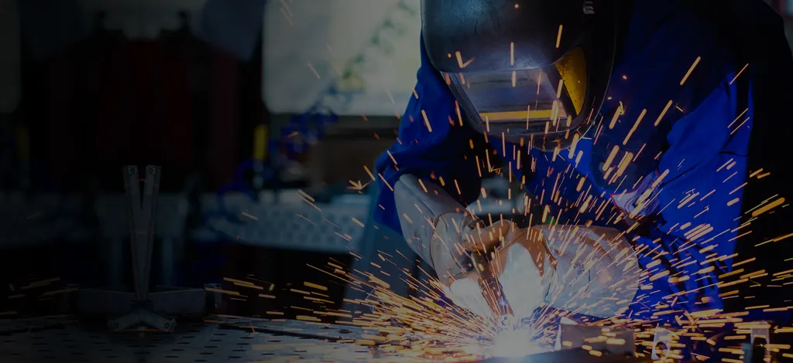
Desde 1999 industrializando portões, corrimãos, grades e estruturas metálicas com alto grau de confiabilidade — na Zona Sul, Zona Norte e Zona Oeste de São Paulo.
Galeria de obras
Direto da fábrica, com parcelamento em até 12 vezes.
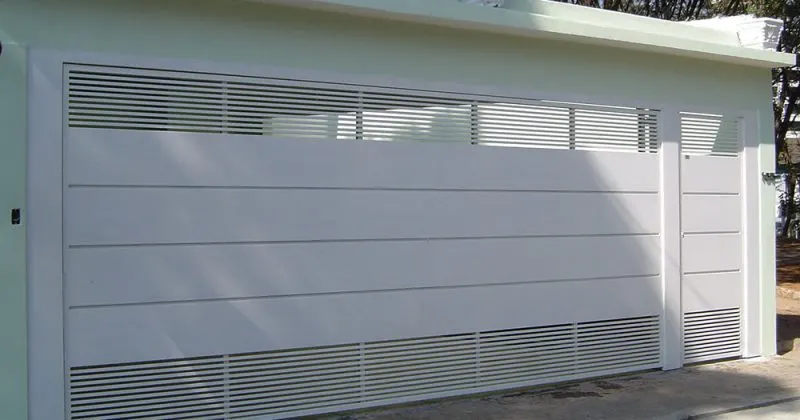
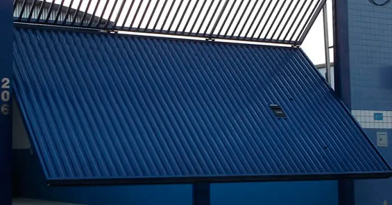
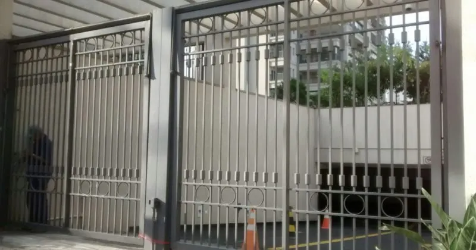
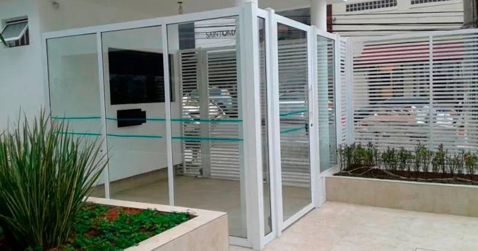
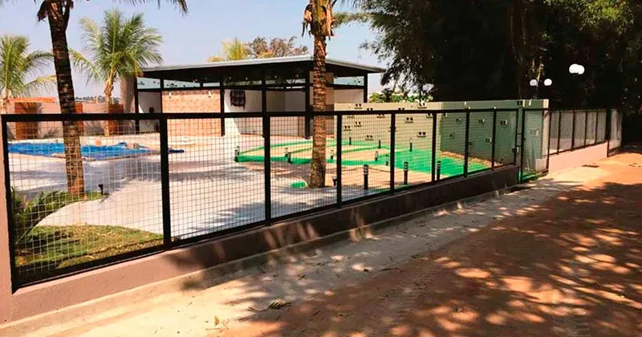
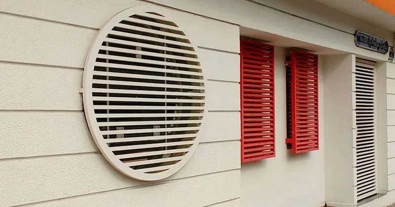
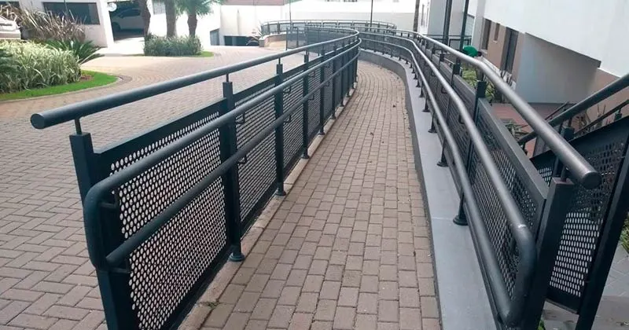
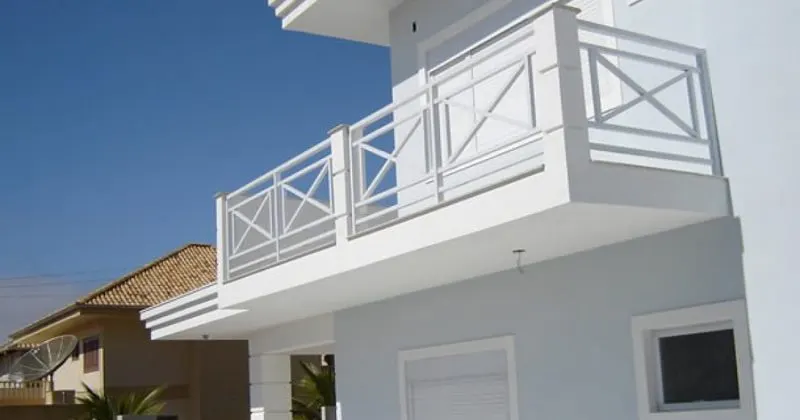
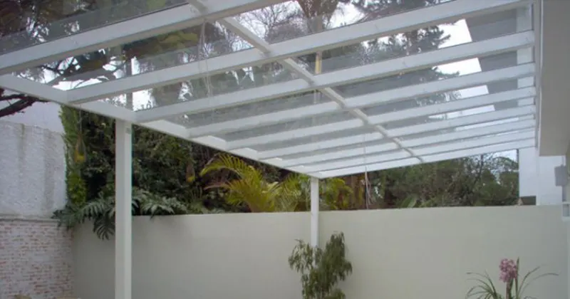
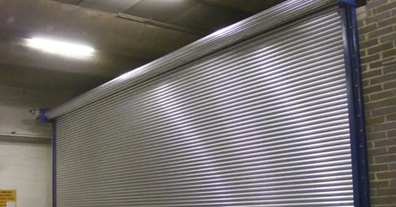
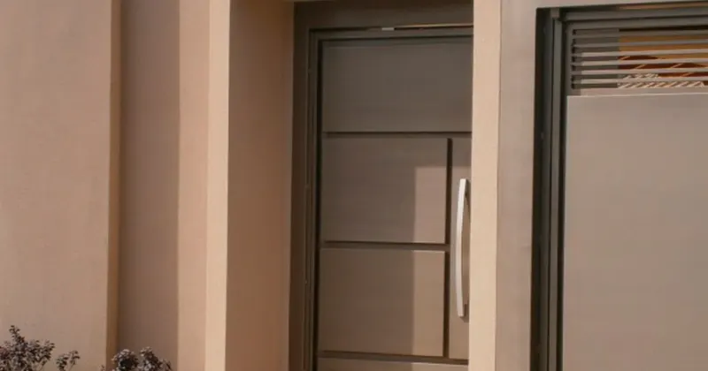
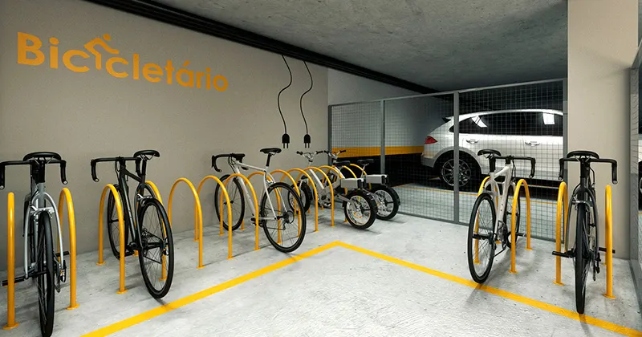
O que fabricamos
Chapa diversos, chapa lambri, chapa perfurada, chapa veneziana, madeira, tela, tubulares, tubulares com madeira
Grande variedade de modelos e revestimentos, para o modelo que melhor se adequa à fachada do seu imóvel.
Articulados, comporta, deslizantes, guilhotina, pivotantes
Resistentes, para facilitar a logística da sua indústria, comércio ou negócio.
Alta resistência para suportar altos fluxos de abertura e fechamento, com baixo nível de manutenção.
Sistema de segurança com duas portas ou portões, que individualiza a entrada de pedestres ou veículos — item indispensável para a segurança de qualquer condomínio.
Grades de fechamento em vários modelos e materiais, para limitar a circulação e preservar espaços.
Fabricadas e instaladas em janelas e áreas vulneráveis — a primeira barreira de proteção para o seu patrimônio.
Materiais de excelente resistência física e mecânica, instalados conforme as normas de segurança mais rígidas.
Aço galvanizado, aço inox
Conferem segurança e modernidade ao seu projeto.
Qualquer projeto de cobertura, confeccionada em vidro ou policarbonato.
Excelente alternativa de custo-benefício para ambientes comerciais.
Excelente alternativa de custo-benefício para ambientes comerciais.
Espaço adequado para a guarda de bicicletas em condomínios.
Pergolados metálicos que valorizam arquitetonicamente jardins de inverno, corredores, garagens e áreas de lazer.
Decoração em geral, esculturas, estantes e prateleiras, fechamento de vãos, grades de parede e floreiras, mesas e cadeiras, nichos e racks de parede
Produtos de arquitetura e decoração, desenvolvidos conforme o seu projeto.
Escadas marinheiro, gaiolas de proteção, grelhas para canaleta, lixeiras, mezaninos, passa-pizza e passa-volumes, pedestais e totens, tampas de inspeção
Serviços
Além da fabricação e instalação dos produtos, a Port Reis executa os mais variados serviços do nosso segmento:
Automatização de portões ainda abertos e fechados de forma manual, instalando motor de qualidade.
Manutenção corretiva e preventiva em produtos instalados por nossa equipe ou por terceiros.
Reforma de diversos produtos, além da fabricação de peças novas para cada projeto.
Equipe especializada em pintura e restauração, para estética e durabilidade dos produtos.
Instalação de fechaduras, travas eletromagnéticas, sensores anti-esmagamento, intertravamento e molas aéreas.
Adequação de corrimãos de escada em condomínios para retirada do AVCB, conforme NBR 9077.
Quem somos
A Port Reis atua no ramo de fabricação de portões e serralheria desde 1999 no estado de São Paulo. Fabricante de portões, portas, grades e estruturas metálicas diversas, atende condomínios, residências, indústrias, comércios, construtoras, arquitetos e decoradores, com mão de obra especializada e equipamentos de última geração.
Direto da fábrica · Parcelamento em até 12 vezes · Melhores condições
Empresa cadastrada junto ao CREA-SP (Conselho Regional de Engenharia e Agronomia do Estado de São Paulo).
"Port Reis demonstrou capacitação técnica e qualidade desde o estabelecimento do projeto de um conjunto de novos portões e clausura, tanto para os pedestres quanto aos automóveis, para instalação de portaria virtual. [...] Na implantação se fez no prazo estabelecido e com técnicas rígidas no assentamento, alinhado com a qualidade do trabalho de seus colaboradores."
José Renato Oliveira — Síndico, Cond. Ed. Mateus Grou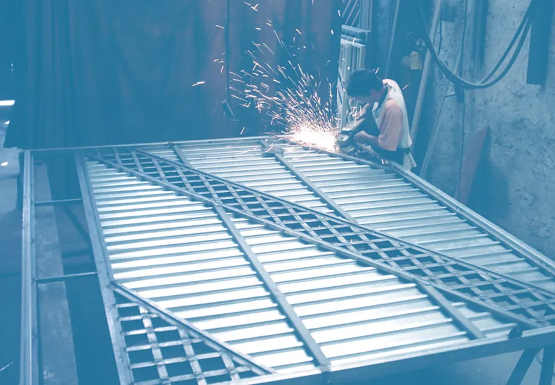
Contato
Atendimento de segunda a sexta, das 9h às 17h.